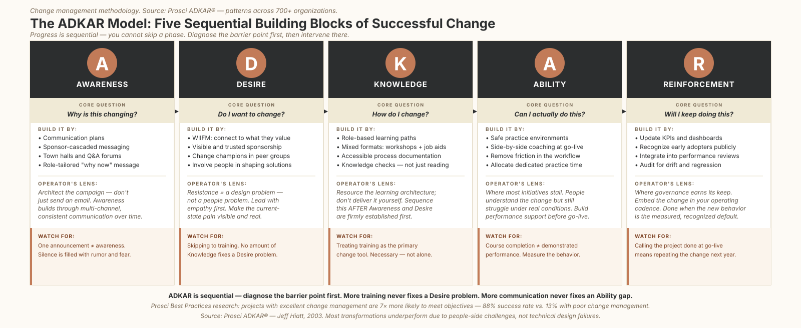
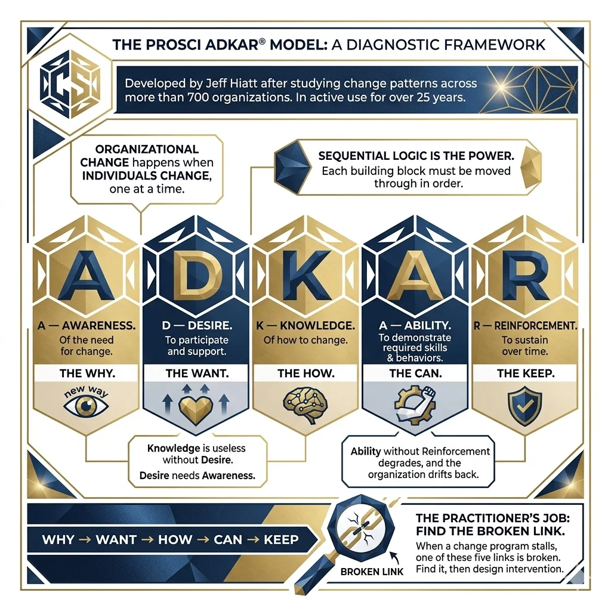

The implication is worth sitting with. A significant share of the friction, stalled adoption, and failed implementations that plague organizational change programs are self-inflicted. Not because the change strategy was wrong, but because the response to resistance was wrong. Teams applied the right interventions to the wrong problems, or the right interventions at the wrong time.
This is what I am calling the prescription trap. And it is where most change programs quietly hemorrhage value.
The Framework
Most People Treat ADKAR as a Checklist
The Prosci ADKAR® Model has been in active use for over 25 years, developed by Jeff Hiatt after studying change patterns across more than 700 organizations. If you have spent any time in organizational change work, you have seen it. It may have been reduced to a five-box summary on a slide, explained as "the five things people need to change," and then set aside while the project team builds training decks.
That is not the model's fault. ADKAR is, at its core, a diagnostic framework. Its power is not in the five boxes. It is in the sequential logic that connects them, and in what that logic reveals about where your program is actually breaking down.
The foundational premise: organizational change only happens when individuals change. Not departments. Not systems. Individual people, one at a time, making the personal decision to move from today's way of working to tomorrow's. The ADKAR model describes five building blocks every person must move through, in sequence, for that transition to succeed:
| A: Awareness | Of the need for change: the why |
| D: Desire | To participate and support the change: the want |
| K: Knowledge | Of how to change: the how |
| A: Ability | To demonstrate the required skills and behaviors: the can |
| R: Reinforcement | To sustain the change over time: the keep |
The sequence is the entire point. A person cannot develop Desire without first having Awareness. Knowledge is useless to someone who has no Desire to use it. Ability, without Reinforcement, degrades, and the organization drifts quietly back to the old way.
Why → Want → How → Can → Keep
When a change program stalls, one of these five links is broken. The practitioner's job, before designing any intervention, is to find which one.
Core Concept
The Barrier Point: Your Most Valuable Diagnostic Tool
Prosci calls the specific building block where a person or population is stuck the barrier point. Finding it is more valuable than any individual intervention you will ever design, because the barrier point tells you exactly what kind of intervention is actually needed.
This matters because every building block requires a fundamentally different response:
- An Awareness gap requires communication: the right messages, through the right channels, repeatedly.
- A Desire gap requires motivation: empathy, involvement, visible sponsorship, honest acknowledgment of what people stand to lose, and what they stand to gain.
- A Knowledge gap requires learning: role-specific, well-sequenced, practical.
- An Ability gap requires practice and support: coaching, real-world reps, performance infrastructure.
- A Reinforcement gap requires governance: updated metrics, accountability structures, recognition, policy changes that lock the new way in.
None of these interventions are interchangeable. And yet in practice, most organizations default to one, training, regardless of where the actual problem is.
Pattern Recognition
The Three Mismatch Patterns That Drain the Most Value
Three mismatches appear repeatedly in change programs across industries. Recognizing them is half the diagnostic work.
1. The Training-for-Desire Trap
People attend training. They pass the assessments. Post-go-live adoption is low. Managers report "resistance." The project team schedules mandatory refreshers and adds follow-up modules.
A Desire gap. These employees are aware of the change and understand it conceptually. They just do not want to do it. They may distrust the leadership driving it. They may see the new way as harder, not better. They may have been excluded from the design process and feel the change is being imposed rather than led. No amount of training addresses any of that.
Prosci's data shows that the #1 reason for employee resistance is lack of awareness of the reason for the change, not complexity, not capability, not culture. When Awareness or Desire is the barrier, training is not just ineffective. It actively reinforces resistance by signaling that leadership isn't listening to the real problem.
2. The Communication-for-Ability Gap
Surveys show high Awareness and Desire. People say they're on board. But when go-live hits, performance drops, workarounds proliferate, and errors increase. The response: more town halls, more update emails, a "refreshed communications plan."
An Ability gap. These people know what to do and want to do it. They just cannot do it consistently under real conditions, under time pressure, with competing priorities, in live systems that behave differently than the sandbox. More communication does not help someone who lacks practiced capability.
The Ability gap is, according to practitioners, where the most initiatives stall, precisely because it is invisible until go-live. Everything looked fine in training.
3. The Announcement-as-Awareness Error
The project team moves fast. Training is complete. Go-live is on schedule. Three months later, two-thirds of the affected population is still using the old process. "They just aren't getting it."
Awareness was declared but never built. An all-hands was held. A one-pager was emailed. Leadership assumed that equals awareness. It does not. Awareness is built through repeated, multi-channel, role-relevant communication over time, not a single broadcast. The vacuum left by insufficient communication is always filled with rumor, fear, and worst-case speculation. That is not a communications problem. It is a change architecture problem.

The ADKAR Model: five sequential building blocks. Progress is sequential: diagnose the barrier point first, then intervene there.
The Prescription Map
Five Barriers. Five Different Prescriptions.
| Barrier Point | Diagnostic Signal | Right Intervention Category |
|---|---|---|
| Awareness | "I don't understand why this is changing." | Communication plans, sponsor cascades, manager-led Q&A sessions |
| Desire | "I understand it. I just don't want to." | WIIFM design, change champion networks, visible and trusted sponsorship |
| Knowledge | "I want to, but I don't know how." | Role-based training, learning architecture, job aids |
| Ability | "I know how. I just can't do it consistently." | Coaching plans, practice environments, performance support infrastructure |
| Reinforcement | "I was doing it. But I drifted back." | KPIs, recognition, governance forums, policy and SOP updates |
This table is deceptively simple. Its practical implication is significant: before a single change intervention is designed, the team must identify, by role and by population, where people actually are in the sequence. A single ADKAR score for "the organization" is a fiction. Different groups are at different barrier points simultaneously. Your communications plan is irrelevant to the team stuck at Ability. Your coaching infrastructure is wasted on the team that still lacks Desire.
Diagnose first. Prescribe second.
The Operator's Lens
Why This Hits Differently in Operational Environments
The workforce knows the process better than anyone on the project team. Long-tenured operational staff carry years of institutional knowledge. When they resist a change, it frequently isn't ignorance, it's expertise. They have already mentally run your new process through the edge cases and found the failure modes you haven't seen yet. Labeling that as "resistance" and scheduling more training is both analytically wrong and operationally costly. Surfacing that resistance as part of Awareness and Desire work, making the pain of the current state visible and involving them in solution design, converts the most credible skeptics into the most effective champions you can find.
Go-live means production impact. In a knowledge-worker ERP rollout, an Ability gap produces a spike in help desk tickets. In an operational environment, an Ability gap means a missed SLA, a compliance incident, a safety near-miss, or a customer escalation. The cost of launching before Ability is built is not abstract. The time to build performance support infrastructure is before go-live, not in response to the incident report that follows it.
Change is rarely just to one dimension. Process excellence initiatives typically combine workflow redesign, systems change, and behavioral shifts in a single program, affecting multiple roles in different ways. A procurement analyst may have full Awareness but fragile Desire. A field technician may have strong Desire but a Knowledge gap because their training wasn't role-specific. The diagnostic must be done by segment, not by program. Aggregate thinking produces misaligned interventions.
Measure where the variation is. Prosci's ADKAR assessment provides a 1-5 score per building block by individual or population. Applied systematically by role, it turns the diagnostic from a conversation into data. This is the same logic a Lean practitioner applies before a process intervention: measure where the variation is before prescribing a fix. Change management is no different. The score tells you where to invest.

The ADKAR Model: a sequential bridge from the current state to the future state.
What This Series Covers
The following five articles go deep on each ADKAR phase, not to re-explain what each phase means, but to provide the practical program design blueprints that make each phase actually work at scale. Each article is designed to stand alone. If you are designing a program from scratch, read them in order. The sequence matters.
- Part 1: Awareness Campaign architecture, manager toolkits, roadshows, and why one announcement does not equal awareness.
- Part 2: Desire The WIIFM design process, resistance as a design problem, change champion networks, and how to engineer constructive dissatisfaction with the status quo.
- Part 3: Knowledge Learning architecture, role academies, microlearning libraries, and why most training programs are delivered in the wrong sequence.
- Part 4: Ability Where initiatives actually stall, performance support infrastructure, floor-walker models, and building demonstrated capability before go-live.
- Part 5: Reinforcement Governance councils, reinforcement calendars, process mining for adoption compliance, and why the change is not done when go-live ends.
Continue with Part 1: Awareness: How to Build a Campaign, Not Just Send an Email →
Source references: Prosci ADKAR® Model: Jeff Hiatt, 2003. Prosci Best Practices research: projects with excellent change management are 7× more likely to meet objectives (88% success rate vs. 13% with poor change management). Prosci Research Hub, 2023: avoidable resistance data.